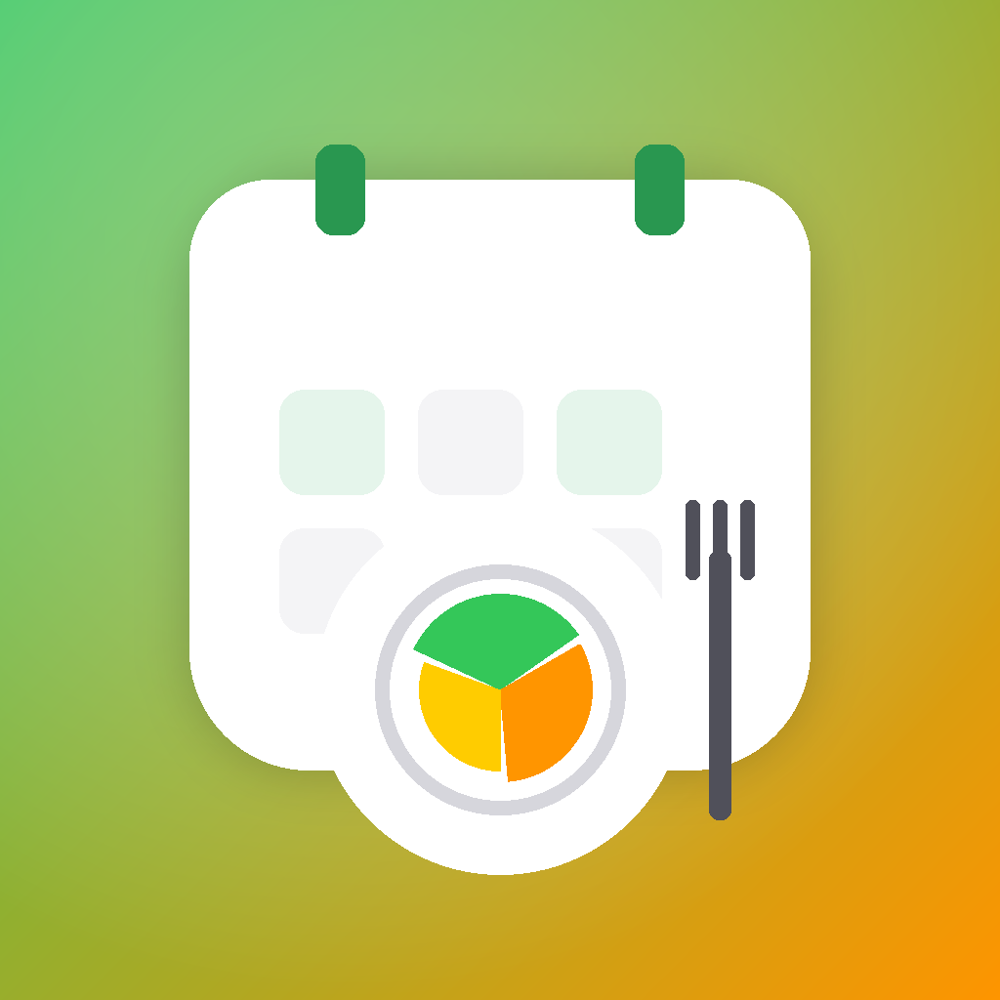

GitoCorp Studios
RealFood Planner
Organiza la semana sin convertir la comida en otra tarea pendiente.
Comida: pollo con arroz
Cena: tortilla y ensalada
Comida: lentejas
Cena: salmón con verduras
Añadir yogures, fruta, huevos y verduras
Despensa revisada antes de salir
Planificar sin perder flexibilidad.
RealFood Planner reúne menús, platos, despensa, compra e historial para que decidir qué comer sea más fácil durante la semana.
Semana a la vista
Comidas y cenas organizadas en una estructura fácil de revisar, cambiar y compartir en familia cuando se active iCloud.
Platos y despensa
Guarda recetas habituales, revisa lo que tienes y prepara la compra con menos improvisación.
Historial útil
Consulta semanas anteriores para inspirarte y evitar repetir siempre lo mismo.
Privacidad de RealFood Planner
RealFood Planner puede funcionar con datos locales y, cuando se active el uso familiar, utilizar iCloud/CloudKit para compartir platos y planificación entre dispositivos o personas invitadas por el usuario.